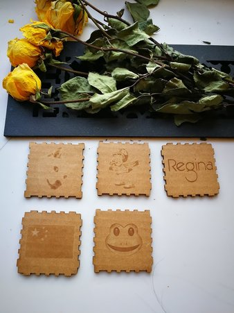
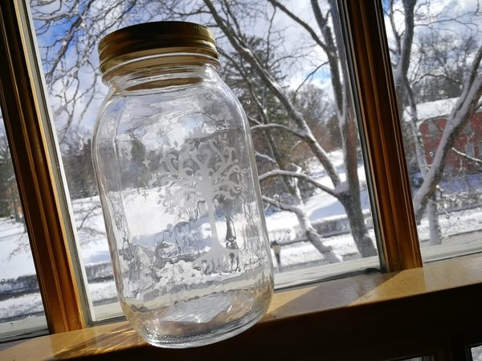
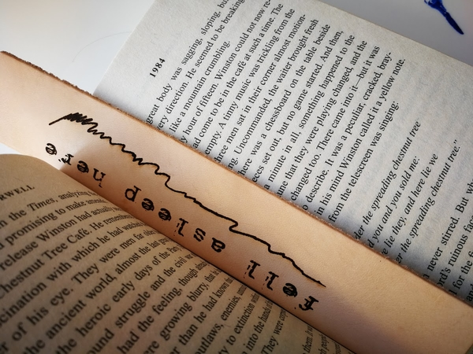

I laser cut a box, a glass jar and a book mark.
I cut the box 3 times and the first two failed. The first time was because I didn't hairlined the ouzzle outline so I couldn't take the pieces off. The second time I didn't set the triange thing right and the cutter was too shallow that I could barely see the cut. The third time was successful but I dropped the triangle thing inside the machine before that.
It turns off to be pretty cool, but it did not smell good.

I printed a glass jar using the rotary attachment for the laser. It went very well. I actually wanted to hairline the picture but the glass would definitely be broken.
I designed the bottle by the inspiration of the Lord of the Rings that I watched 10 times during mid-winter break. I combined the tree of Gondor and a Latin word "exerunt", which means "they lived". Because I hope those characters really lived.

The only disatisfaction is that the pattern is a little bit off-centered because the jar is not exactly a cylinder, but it's cool any way. I will put light bulb in the jar and make it to a lamp.
I made a leather bookmark for the third project.
